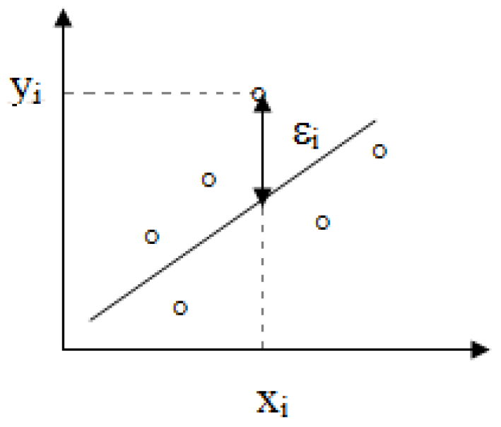
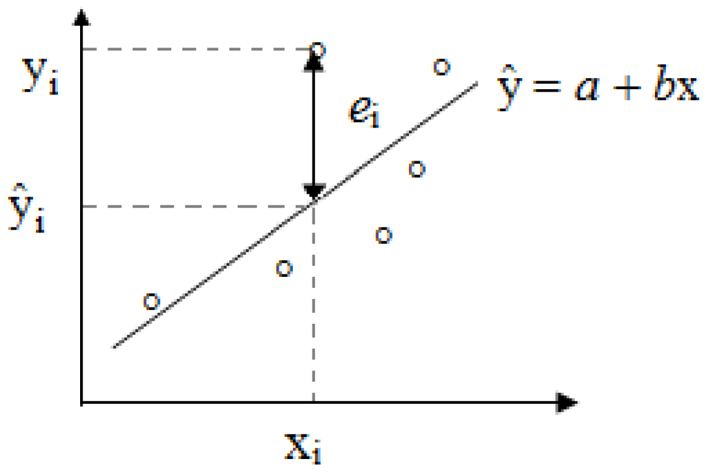

Regressão Linear Simples
ESTAT0011 – Estatística Aplicada
Prof. Dr. Sadraque E. F. Lucena
sadraquelucena@academico.ufs.br
http://sadraquelucena.github.io/estat-aplicada
Motivação
- Vamos estudar o modelo de regressão com a formulação: uma variável dependente \(Y\) e uma variável independente \(X\).
- O objetivo é modelar \(Y\) como uma função linear de \(X\): modelo de regressão linear simples.
| Área | Variável Independente (\(X\)) | Variável Dependente (\(Y\)) |
|---|---|---|
| Eng. Materiais | Carga aplicada (N) | Deformação do corpo de prova (mm) |
| Eng. Civil | Relação Água/Cimento | Resistência à Compressão (MPa) |
| Física Médica | Tempo de Exposição (s) | Dose de Radiação Absorvida (Gy) |
Objetivos da Regressão Linear
- A regressão linear pode ser utilizada com dois objetivos principais:
- Modelo preditivo: Estimar o valor de \(Y\) para novos valores de \(X\).
- Modelo Explicativo: Investigar a relação entre as variáveis e entender como mudanças em \(X\) influenciam \(Y\).
- Nas engenharias, isso significa:
- Otimizar processos: Encontrar o ajuste ideal de \(X\) para obter o melhor \(Y\).
- Reduzir custos e riscos: Substituir medições complexas ou perigosas por estimativas matemáticas confiáveis baseadas em calibrações prévias.
Fundamentos do Modelo
- A análise parte de pares \((x_1, y_1), (x_2,y_2),\ldots, (x_n,y_n)\).
- Suponha que podemos escrever a relação entre as duas variáveis, da seguinte maneira:
\[ y_i = \alpha + \beta x_i + \varepsilon_i \]
- \(y_i\) é a variável aleatória associada à \(i\)-ésima observação de \(Y\);
- \(x_i\) é a \(i\)-ésima observação do valor fixado para a variável independente (e não-aleatória) \(X\);
- \(\varepsilon_i\) é o erro aleatório da \(i\)-ésima observação, isto é, o efeito de uma infinidade de fatores que estão afetando a observação de \(Y\) de forma aleatória;
- \(\alpha\) e \(\beta\) são parâmetros que precisam ser estimados.
Estimando os Parâmetros
- Queremos encontrar a reta que passe o mais próximo possível dos pontos observados

Estimando os Parâmetros
- O método de mínimos quadrados é usado para estimar os parâmetros do modelo (\(\alpha\) e \(\beta\)) e consiste em fazer com que a soma dos erros quadráticos seja menor possível, ou seja, este método consiste em obter os valores de \(\alpha\) e \(\beta\) que minimizam a expressão: \[ S = \sum\limits_{i=1}^n \varepsilon_i = \sum\limits_{i=1}^n (y_i - \alpha - \beta x_i)^2. \]
Fórmulas das Estimativas
- Aplicando-se derivadas parciais à expressão anterior, e igualando-se a zero, acharemos as seguintes estimativas para \(\alpha\) e \(\beta\), as quais chamaremos de \(a\) e \(b\), respectivamente: \[ b = \frac{n \sum\limits_{i=1}^n x_i y_i - \left( \sum\limits_{i=1}^n x_i\right) \left( \sum\limits_{i=1}^n y_i\right)}{n\sum\limits_{i=1}^n x_i^2 - \left(\sum\limits_{i=1}^n x_i\right)^2} \] e \[ a = \frac{\sum\limits_{i=1}^n y_i - b \sum\limits_{i=1}^n x_i}{n}. \]
A Reta de Regressão
- A chamada equação (reta) de regressão é dada por: \[ \widehat{y} = a + bx \]
- E para cada valor \(x_i\) (\(i = 1, \ldots, n\)) temos, pela equação de regressão, o valor predito: \[ \widehat{y}_i = a + b x_i. \]
- A diferença entre os valores observados e os preditos é chamada de resíduo: \[ e_i = y_i - \widehat{y}_i. \]
Resíduos e Ajuste
- O resíduo relativo à \(i\)-ésima observação (\(e_i\)) pode ser considerado uma estimativa do erro aleatório (\(\varepsilon_i\)) desta observação (veja ilustração abaixo).

- Como medir a “qualidade” do modelo?
Coeficiente de Determinação (\(R^2\))
- O coeficiente de determinação é uma medida descritiva da proporção da variação de \(Y\) que pode ser explicada por variações em \(X\), segundo o modelo de regressão especificado. Ele é dado pela seguinte razão:
\[ \begin{align} R^2 &= \frac{\text{variação explicada pelo modelo}}{\text{variação total}}\\ &=\frac{\sum\limits_{i=1}^n (\widehat{y}_i - \overline{y})^2}{\sum\limits_{i=1}^n (y_i - \overline{y})^2} = \frac{\sum\limits_{i=1}^n \widehat{y}_i - n\overline{y}^2}{\sum\limits_{i=1}^n y_i - n\overline{y}^2}. \end{align} \]
Coeficiente de Determinação (\(R^2\))
Note que \(0\leq R^2 \leq 1\).
- Se \(R^2 = 0\), o modelo não tem nenhum poder explicativo.
- Se \(R^2 = 1\), o poder explicativo do modelo é total.
Exemplo 6.1
Uma engenheira está desenvolvendo um novo polímero reforçado com fibras de vidro. Ele quer entender como o aumento do percentual de fibra de vidro (em massa) afeta a resistência ao impacto do material. Isso permite prever a resistência de novas composições e identificar o ponto onde o excesso de fibra pode, na verdade, fragilizar o material devido à má dispersão.
| Teor de Fibra (%) | 2 | 4 | 4 | 5 | 7 | 8 | 10 |
| Resistência (J) | 40 | 55 | 50 | 41 | 17 | 26 | 16 |
- Ajuste um modelo de regressão linear para prever a Resistência (\(Y\)) em função do Teor de Fibra (\(X\)).
- Calcule o Coeficiente de Determinação (\(R^2\)) e interprete a qualidade do ajuste.
- Estime qual seria a Resistência esperada para um composto com 12% de fibra.
Exemplo 6.2
O engenheiro monitora a consistência do concreto via betoneira. Ele modela o volume de água (L/m³) e o abatimento (capacidade de fluir e nivelar sem compactação adicional) em centímetros. O objetivo é prever a fluidez, garantindo o preenchimento de armaduras densas sem criar vazios.
| Água adicionada (L/m³) | 160 | 165 | 165 | 170 | 175 | 180 | 185 |
| Abatimento (cm) | 5 | 8 | 7 | 10 | 14 | 18 | 22 |
- Ajuste um modelo de regressão linear para prever o Abatimento (\(Y\)) com base na Água (\(X\)).
- Interprete o significado prático do coeficiente \(\beta_1\) (inclinação) para a dosagem do concreto.
- Se o projeto exige um abatimento de 16 cm, quanta água o engenheiro deve estimar?
Fim